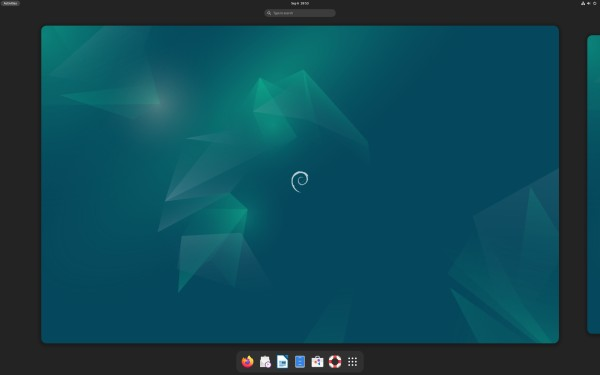

The Stable

Some History
is a free and open source Linux distribution developed by the Debian Project. Debian was created and established by Ian
Murdock on August 16, 1993, who aimed to create a Linux distribution built on the free and open source principles. Debian is
currently the second oldest Linux distribution still in active development, behind only Slackware. Debian is known for it's
stability and security in the Linux world, but that comes at the cost of having older software versions.
Using Debian
Because the Debian team employes rigorous testing before software packages are released, and stability is prioritzed over the cutting edge,
Debian packages are often many versions behind the latest release. This also means that new versions of Debian Linux are on a longer release
cycle than othet distributions. A new version of Debian is released every 2 years, and is supported for 5 years after release.
Debain uses the APT package manager, which is a powerful tool for managing software packages. APT is used to install, update, and remove
software from your system. To install a package using APT, you would use the command
"sudo apt install package-name".
Furthermore to update all of your software with a one liner, you would use the command
"sudo apt update && sudo apt upgrade".
This command will update the package list and then upgrade all of your software to the latest version currently listed in the Debian repositories.
By default, Debain uses the GNOME desktop environment, but you can choose just about any desktop environment you want like Plasma,
Cinnamon, or XFCE. The GNOME desktop environment, is a modern desktop environment that could be most easily compared to the MacOS desktop.
It is easy to use, navigate and make your own with plenty of available themes and extensions.
Wrapping Up
Debian is a great distro for those that value stability and security over the latest and greatest software, however, I don't think it's
the best for beginners. By default, Debian doesn't come with proprietary software, so you'll have to install it yourself. This can be
a bit of a pain for beginners, but it's not impossible. If you are a beginner, I would recommend starting with a distro based on Debian
that includes proprietary software by default, like Ubuntu or Linux Mint.